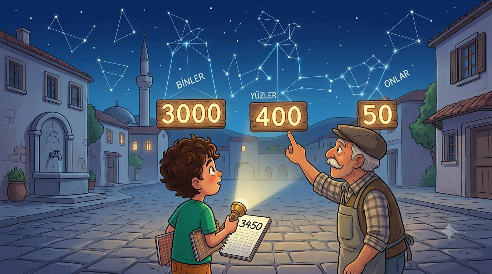
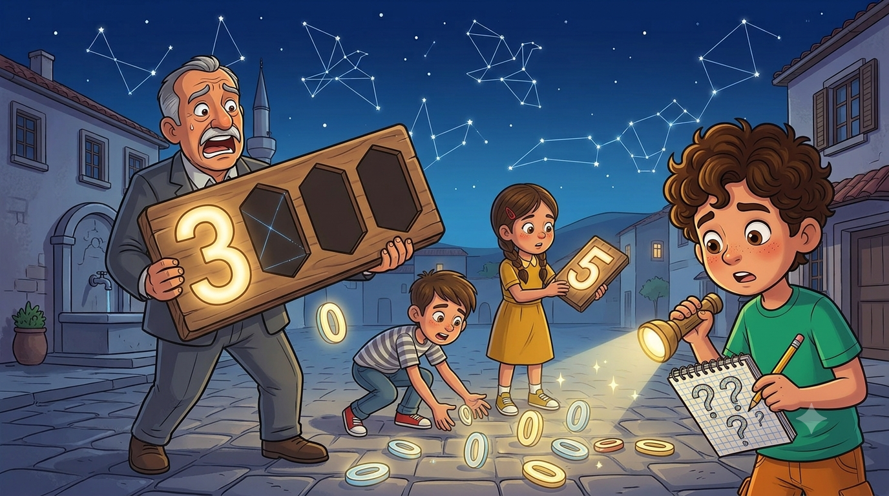
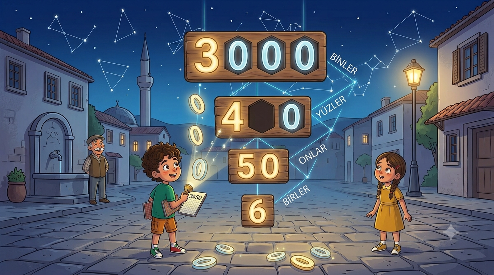
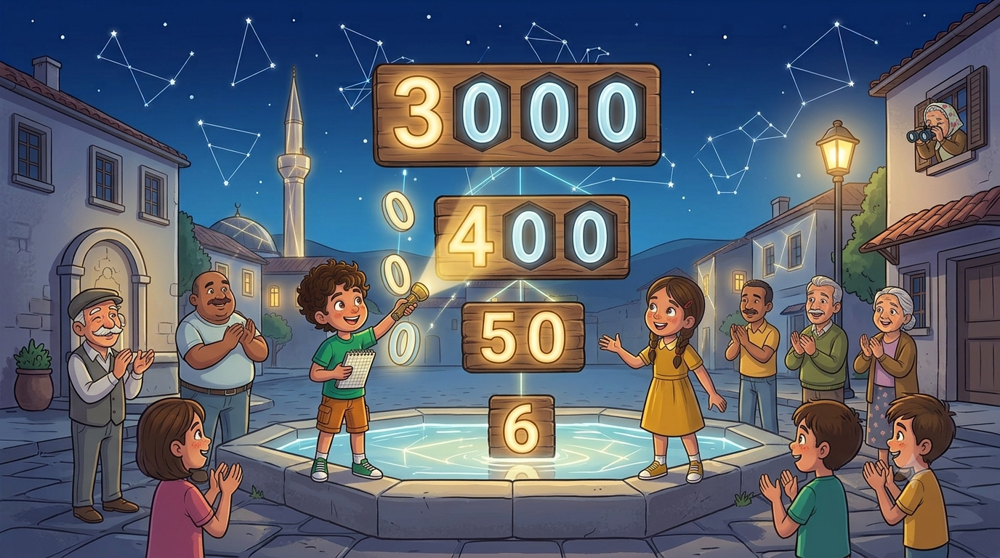

Belediye mahalleye dev bir teleskop gönderdi, cuma akşamı Gökyüzü Gecesi var! Ama gezegen kartlarındaki sayılar o kadar uzun ki kimse okuyamıyor. Milyonlar mı, milyarlar mı? Kahramanımız mikrofon başına geçmeden bölüklerin sırrını çözmek zorunda!
Turnuvadan sonra mahallemizin adı belediyede iyice duyulmuş olacak ki bir sabah muhtar, hoparlörün başında boğazını dört kere temizledi: "Sayın mahalleli! Belediyemiz, mahallemize bir geceliğine DEV bir teleskop gönderecektir! Cuma akşamı meydanda Gökyüzü Gecesi düzenlenecektir! Yıldızlar seyredilecektir!" Mübeccel Teyze balkondan sordu: "Dürbünümden iyi mi bari?" Muhtar bir an duraksadı, sonra dürüst davrandı: "Onu bilemeyeceğim Mübeccel Hanım."
Teleskopla birlikte bir de gökbilimci geldi: Gökçe Abla. Üniversitede gezegenlere bakıyormuş; meslek olarak yani. Ben o güne kadar mesleğin böylesinin olduğunu bilmiyordum. Gökçe Abla yanında kocaman bir tomar kart getirdi: her kartta bir gezegen ve Güneş'e uzaklığı yazıyordu. "Gece boyunca birisi bu kartları mikrofondan okuyacak," dedi ve dönüp bana baktı. Herkes dönüp bana baktı. Horoz bile döndü baktı.
Muhtar boğazını temizledi: "Kendisini Gökyüzü Gecesi Resmî Sunucusu ilan ediyorum!" Altıncı unvan. Deftere yazdım: "Görev: Kartları oku. Sorun: Kartları okuyamıyorum. Durum: Panik, ama artık profesyonel panik."

Sorunu ilk fark eden ben oldum. Dünya kartında şu yazıyordu: 149597890. Dokuz rakam, yan yana, aralarında ne bir boşluk ne bir ipucu. Sesli okumayı denedim: "Yüz kırk dokuz bin... yok yok... bir milyon kırk..." Olmuyordu. Emre denedi: "On dört milyar!" dedi, gözünü kırpmadan. Nereden bulduysa. Mübeccel Teyze balkondan kesin hükmünü verdi: "O sayı yanlış yazılmış, o kadar sayı olmaz."
Dedem kartı eline aldı, kasketini kaldırdı: "Sayı doğru da siz okumasını bilmiyorsunuz," dedi. "Askerde bize öğretmişlerdi: kalabalık asker bölük bölük sayılır. Sayılar da öyle. Sağdan başlayıp üçerli ayıracaksın: bunlara bölük denir." Kalemini çıkardı, karta üç çizgi attı: 149 597 890. Bir anda sayı nefes aldı sanki.
"Sağdaki üçlü birler bölüğü, ortadaki binler bölüğü, soldaki milyonlar bölüğü. Daha büyürse milyarlar gelir," dedi dedem. "Okurken soldan başlarsın: bölükteki sayıyı oku, bölüğün adını söyle." Denedim: yüz kırk dokuz... milyon... beş yüz doksan yedi... bin... sekiz yüz doksan. "Yüz kırk dokuz milyon beş yüz doksan yedi bin sekiz yüz doksan!" Okumuştum. Kilometrelerce uzunluktaki sayıyı okumuştum!
🪖 Defterime not aldım: Sayılar sağdan sola üçerli bölüklere ayrılır: birler, binler, milyonlar, milyarlar bölüğü. Okurken soldan başla: bölükteki sayı + bölüğün adı. Birler bölüğünün adı söylenmez!

Elif, her zamanki gibi işi bir adım öteye taşıdı. Kâğıda kocaman bir tablo çizdi: basamak tablosu. "Her rakamın oturduğu koltuğun adı var," dedi. "Sağdan sola: birler, onlar, yüzler; sonra binler, on binler, yüz binler; sonra milyonlar... Bölüğün adı, ilk koltuğunun adıyla aynı!"
Sonra o meşhur soruyu sordu: "Abi, Merkür kartındaki 57 909 175'te iki tane 9 var. İkisi de aynı mı?" "Dokuz dokuzdur," dedim. Yanılmışım. Elif gösterdi: sağdaki 9, yüzler basamağında oturuyor; değeri 9 × 100 = 900. Soldaki 9 ise yüz binler basamağında; değeri 9 × 100 000 = 900 000! "Rakam aynı ama basamak değeri bambaşka. Koltuk mühim," dedi Elif. Dedem onayladı: "İnsan da öyledir evlat, oturduğu yere göre değerlenir. Ama sayılarda bu iş daha adil."
Emre bile sonunda anladı ve hemen kendine pay çıkardı: "Yani benim karnemdeki 1, milyonlar basamağına yazılsa bir milyon eder!" Elif düzeltti: "Etmez. Karne öyle çalışmıyor."
💺 Defterime not aldım: Her rakamın bir basamağı (koltuğu) var. Basamak değeri = rakam × basamağın değeri. 57 909 175'te soldaki 9'un değeri 900 000, sağdaki 9'un değeri 900!

Cuma akşamı meydan doldu taştı. Komşu mahalleden bile gelenler oldu; tabii bizim sahada yenilmiş olmanın buruk gururuyla. Gökçe Abla teleskopu Satürn'e çevirdi. Sıra bende, mikrofon elimde, kartlar önümde. Derin bir nefes aldım.
"Sayın mahalleli! Ay'a uzaklığımız: üç yüz seksen dört bin dört yüz kilometre! Merkür'ün Güneş'e uzaklığı: elli yedi milyon dokuz yüz dokuz bin yüz yetmiş beş kilometre!" Sayılar ağzımdan tren vagonları gibi düzgün düzgün çıkıyordu. Bölük bölük, tıkır tıkır. Neptün'e geldiğimde meydan çıt çıkarmıyordu: "Dört MİLYAR dört yüz doksan sekiz milyon iki yüz elli iki bin dokuz yüz kilometre!" Alkış koptu. Mübeccel Teyze balkondan "Maşallah, hafız gibi okuyor!" diye bağırdı.
Sıra teleskopla bakmaya geldi. Satürn'ü gördüm: halkaları vardı, gerçekten vardı! O an anladım: gökyüzünde milyonlarca kilometre öteden bize bakan koca gezegenler var ve biz artık onların uzaklığını okuyabiliyoruz. Gökçe Abla giderken bana kartların tamamını hediye etti: "Resmî Sunucu, son bir görev: kartları panoya asmadan önce okunuşlarını kontrol et. Tek bir sıfır bile kaybolmasın!"
🔭 Defterime not aldım: Büyük sayı korkulacak şey değil; bölüğünü bul, adını söyle. Kayıp sıfırlara dikkat: 4 070 000 "dört milyon yetmiş bin" okunur — sıfırlar yer tutucudur!

Gezegen Kartı Kontrolü! 🎯
Gökçe Abla'nın kartları panoya asılıyor. Okunuşu verilen sayının kartını gökyüzü panosunda bulup tıkla!
⭐ Puan: 0❓ Soru: 1/5
🌟 Pano Onaylandı!
Kartlar panoya asıldı. Gökçe Abla giderken el salladı: "Bu mahalle artık milyarları bile okuyor!" Muhtar panoya bir de kendi notunu ekledi: "Okuyamayan, Resmî Sunucumuza danışabilir."
Kâşif Defteri — bugün öğrendiklerimiz:
• Sayılar sağdan sola üçerli bölüklere ayrılır: birler → binler → milyonlar → milyarlar
• Bölüğün adı, ilk basamağının adıyla aynıdır
• Okurken: bölükteki sayı + bölük adı; birler bölüğünün adı söylenmez
• Basamak değeri = rakam × basamağın değeri (koltuk mühim!)
• Sıfırlar yer tutucudur — kaybolmalarına izin verme!